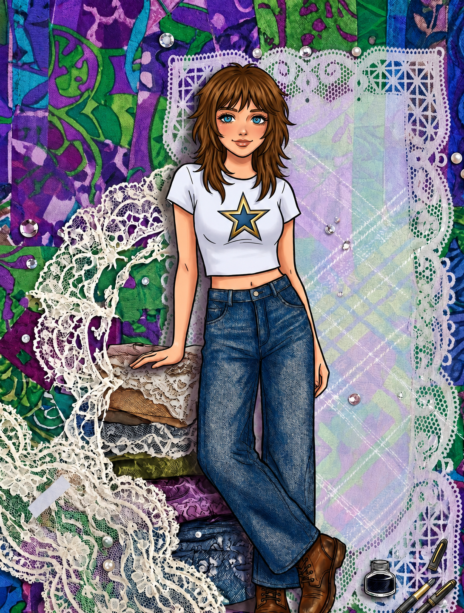
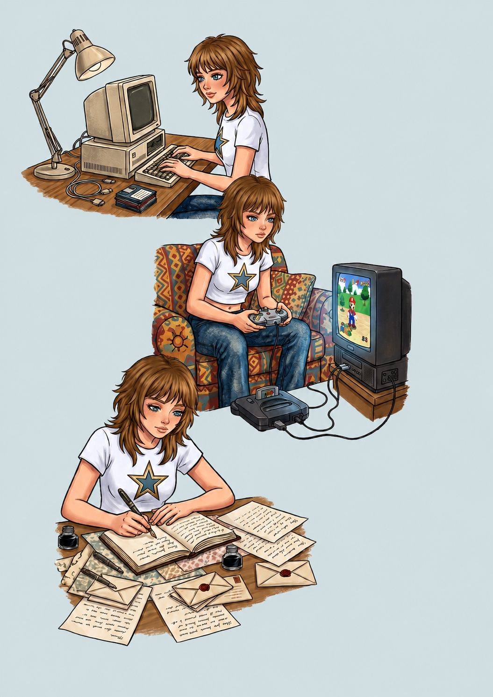

Sou uma pessoa guiada pela reflexão, pelo esforço e pela lealdade; esses são os pilares que sustentam a minha forma de estar no mundo. É no universo artístico e nos meus momentos de criação que costumo encontrar os significados que procuro: o amor, o real e a oportunidade constante de mudança. Quando me dedico aos meus hobbies — seja escrevendo textos introspectivos, ouvindo música, escrevendo cartas dedicadas a quem amo, criando coisas com as minhas prórpias mãos, ou me transportando para as grandes histórias dos videogames —, sinto que me liberto de todas as verdades absolutas do mundo. Nesses momentos, concentro-me apenas no meu papel mais puro como ser humano: o de estar viva e sentir.
Essa mesma essência me conduziu por um caminho não linear, mas profundamente realista, até a computação. Gostar de programar foi uma jornada de autodescoberta. Para percorrê-la, precisei primeiro desarmar velhas certezas: admiti que a matemática poderia ser divertida e que eu poderia, sim, ser uma pessoa lógica, expandindo um espaço que antes eu acreditava ser ocupado apenas pelo "coração". Ao compreender os primeiros conceitos abstratos da lógica de programação, percebi que estava diante de uma oportunidade única de crescimento. A programação me devolveu a perspectiva de uma criança: o direito de aprender do zero, de errar sem medo e de evoluir pelo puro esforço. Redescobrir esse lado adormecido da minha personalidade me lembrou dos meus dias mais ensolarados, onde o processo de tentar e falhar era apenas parte do ato de sonhar.
Minha filosofia sobre a computação nasce justamente desse equilíbrio. Acredito que muitas pessoas deixam de explorar a lógica por medo do erro, enquanto muitos programadores vivem imersos nela, esquecendo-se de que possuem um coração que bate e que necessita de significado. O resultado disso se reflete no cotidiano: códigos frios construídos por profissionais que não encontram um motivo real para se esforçarem, e mentes criativas que nunca conhecem o potencial de sua própria racionalidade. Enxergo a programação como uma profissão que exige paixão, tanto pelas linhas de código quanto pela vida. Meu objetivo na tecnologia é unir essa bagagem abstrata e humana ao rigor lógico, desenvolvendo softwares de forma abrangente, com o propósito de criar soluções que tenham alma, significado e um impacto real.
Nos momentos de lazer eu me permito desconectar da realidade. Para que você me conheça melhor, divido aqui minhas listas favoritas do que eu amo:
